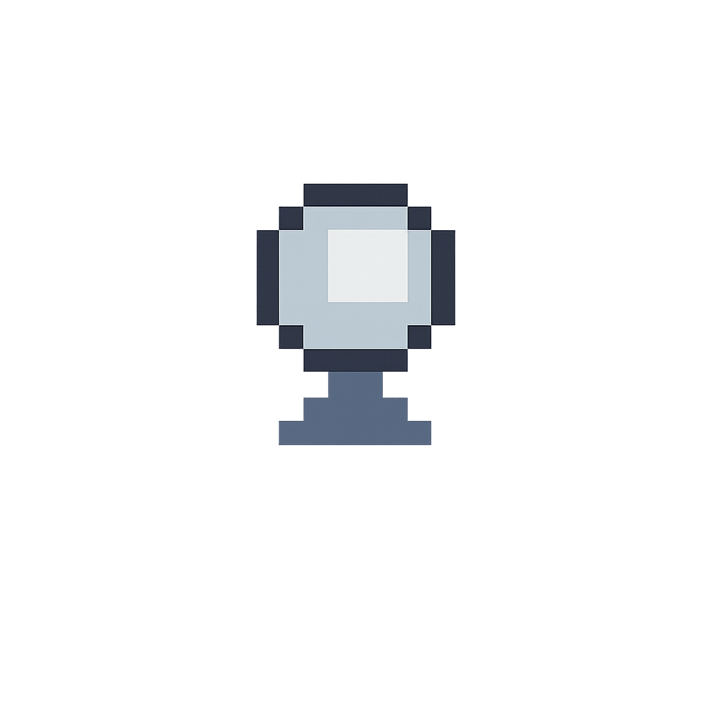
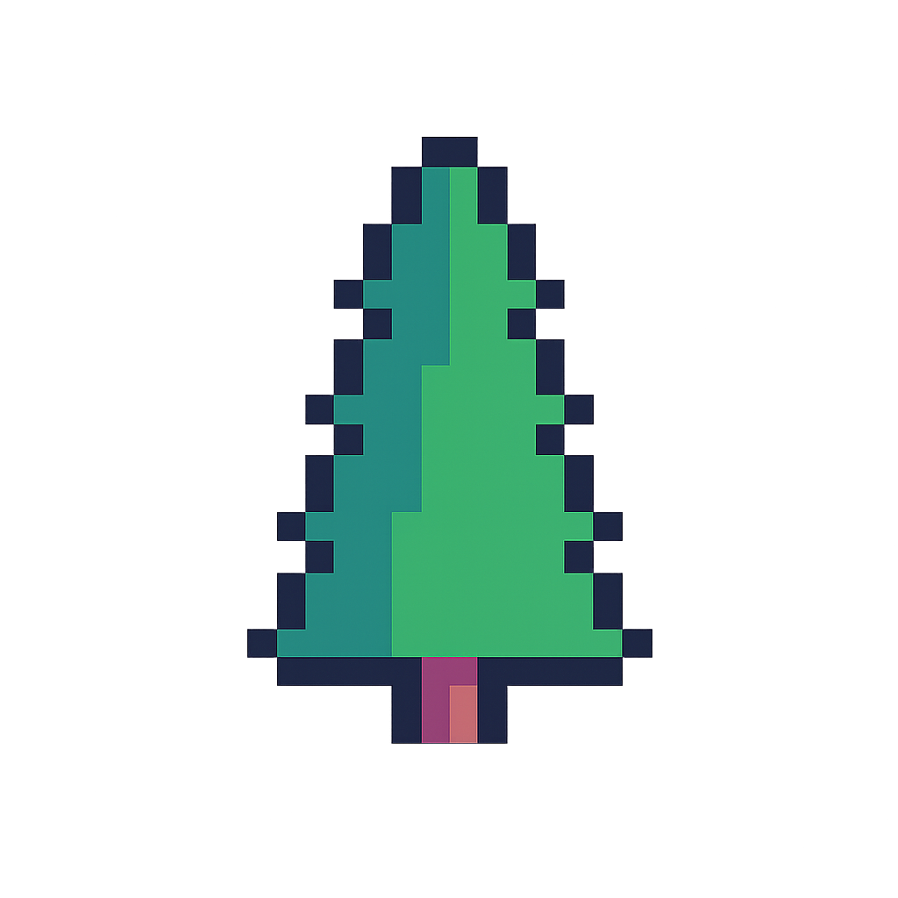
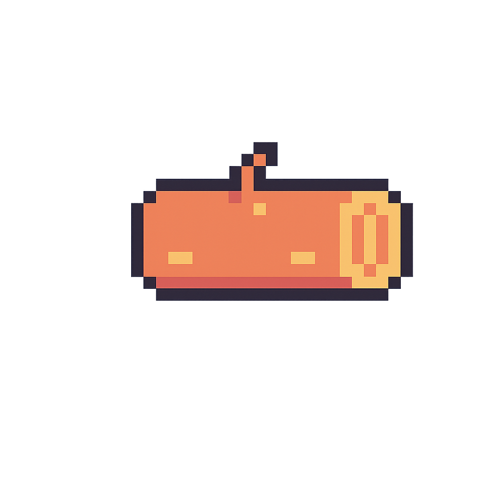
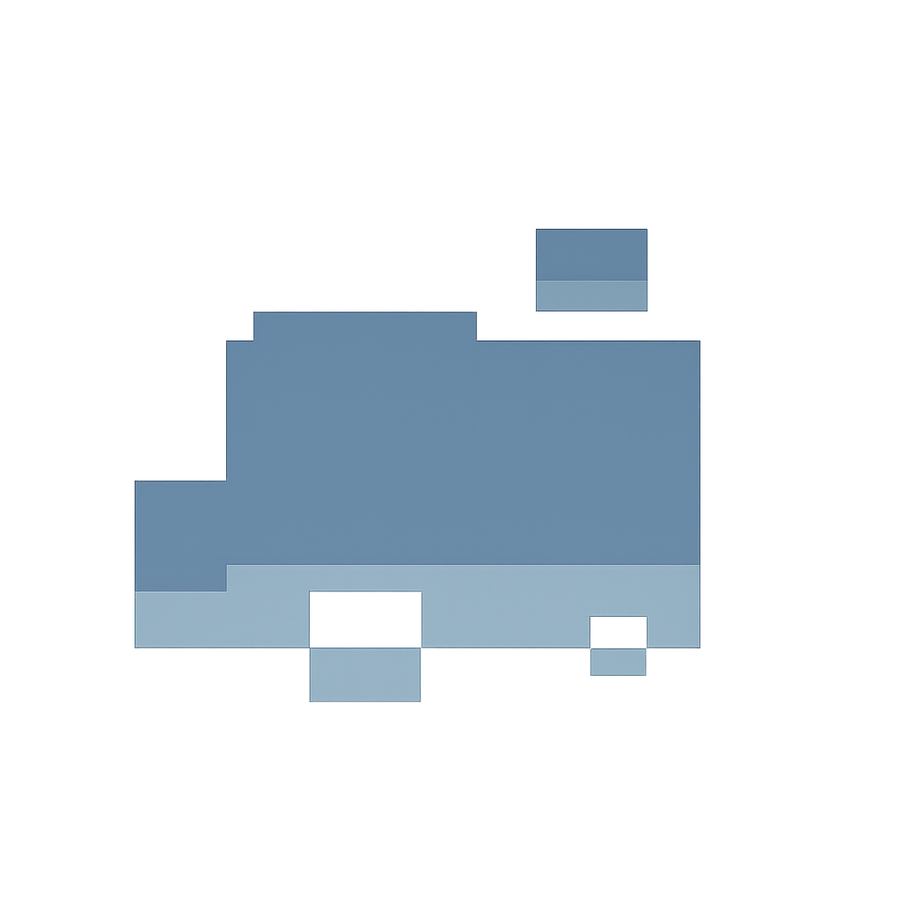
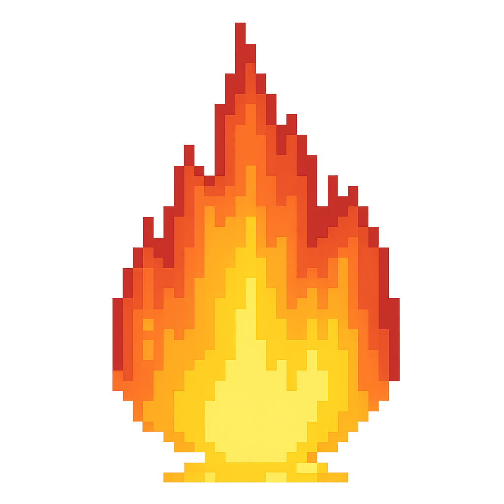
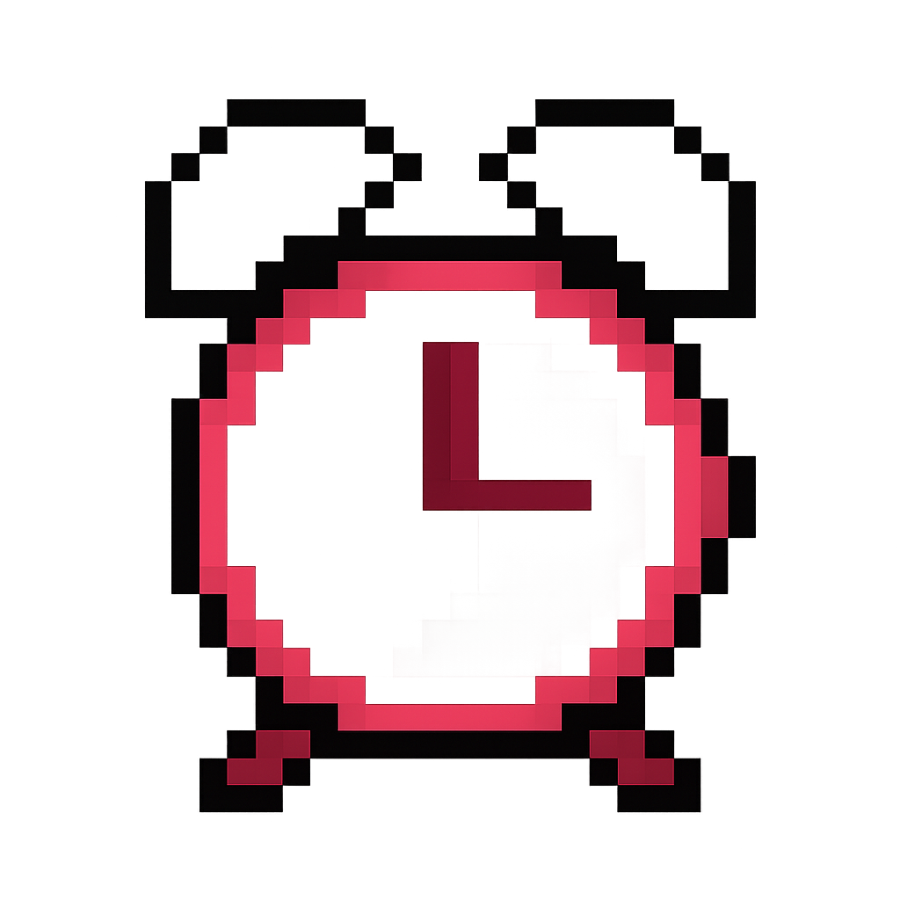

✖
🎮 Nasıl Oynanır?
- Kontroller: ◄ Sol & ► Sağ ok tuşları ile kar topunu hareket ettir.
- Oyuna başlamak: Giriş ekranından "▶ PLAY" butonuna tıkla.
🧱 Öğe Bilgileri:
- Kar Topu (100): +50 puan verir.
- Ağaç (150): +75 puan, -20 ceza.
- Kütük (200): +100 puan, -30 ceza.
- Kaya (250): +150 puan, -40 ceza.
- Kırmızı Tehlike: -20 puan.
- Süre Bonus: +10 saniye.
Not: Skorun arttıkça kar topun büyür. 3000 puanla dev olur!